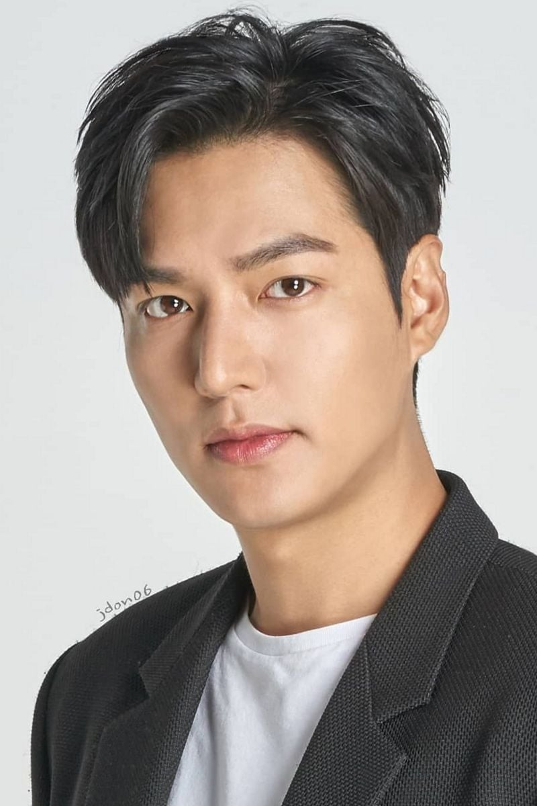
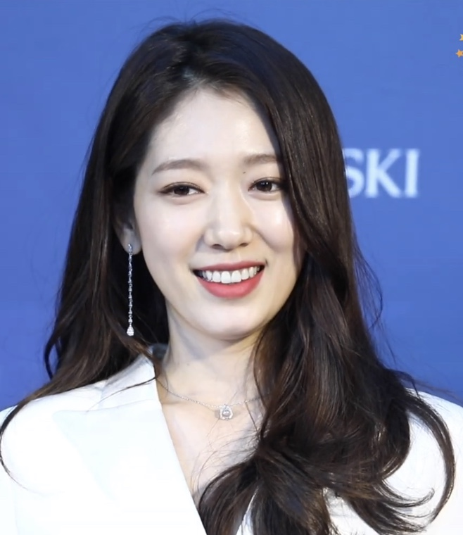
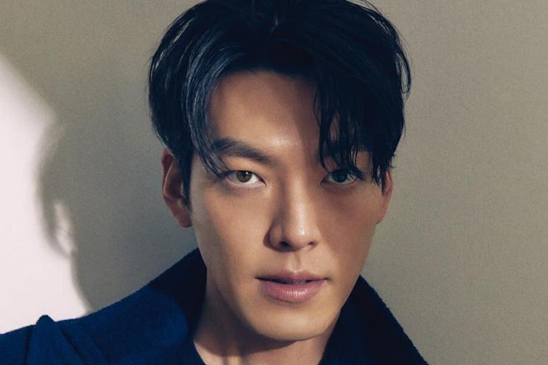
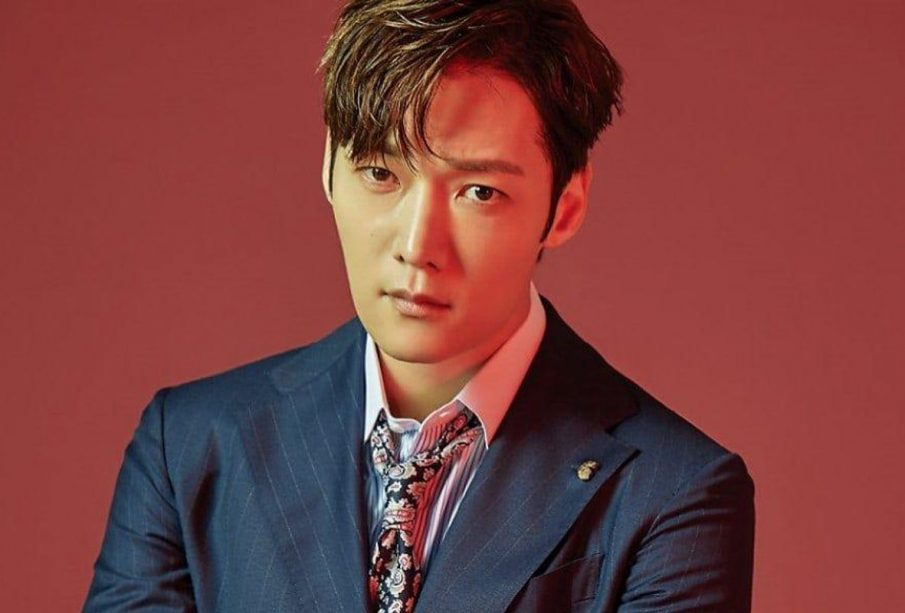
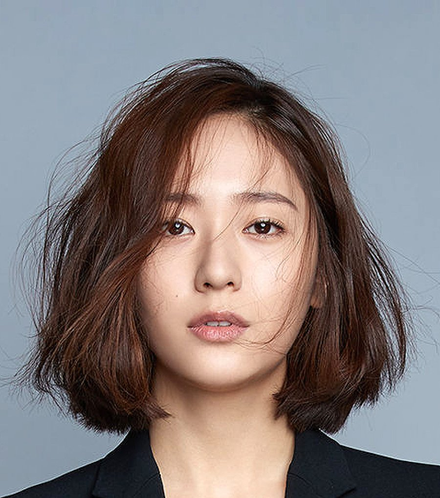
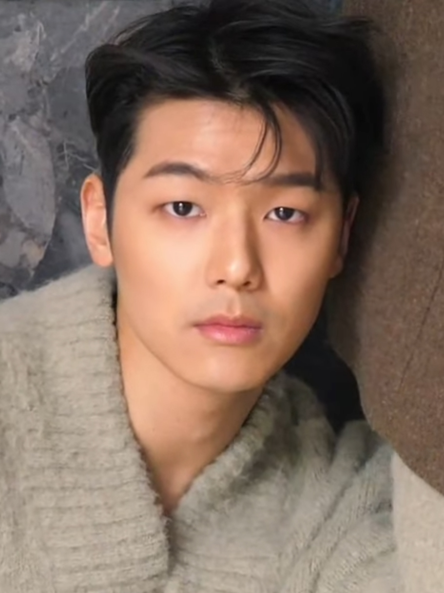
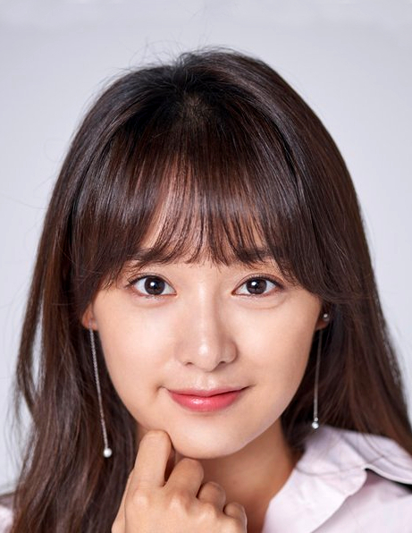

Lee Min-ho é um ator, cantor e modelo sul-coreano. Ele ganhou popularidade na Coreia do Sul e em algumas partes da Ásia ao protagonizar o drama televisivo Boys Over Flowers em 2009. O papel lhe rendeu o prêmio de Melhor Ator Revelação no Baeksang Arts Awards.
Nascimento: 22 de junho de 1987 (idade 34 anos), Heukseok-dong, Seul, Coreia do Sul
Altura: 1,87 m
Agência: MYM Entertainment; IMX Inc. Huayi Brothers
Irmãos: Lee Yun-jeong
Prêmios: SBS Drama Award for Best Couple, MAIS

Park Shin-hye é uma atriz sul-coreana, mais conhecida por interpretar Go Mi-nam / Go Mi-nyu na série coreana You're Beautiful.
Nascimento: 18 de fevereiro de 1990 (idade 32 anos), Nam-gu, Kwangju, Coreia do Sul
Cônjuge: Choi Tae-joon (desde 2022)
Irmãos: Park Shin-won
Pais: Jo Mi-sook, Park Hyun-jong

Kim Woo-bin é um ator e modelo sul-coreano.
Nascimento: 16 de julho de 1989 (idade 32 anos), Seul, Coreia do Sul
Altura: 1,88 m
Nome completo: Kim Hyun-joong
Indicações: Baeksang Arts Award: Prêmio de Popularidade, MAIS

Choi Jin-hyuk é um ator e cantor sul-coreano. É mais conhecido por seus papéis nas séries de televisão Gu Family Book, The Heirs e Eunggeubnamnyeo.
Nascimento: 9 de fevereiro de 1986 (idade 36 anos), Mokpo, Coreia do Sul
Nome completo: Kim Tae-ho

Chrystal Soo Jung, mais conhecida apenas como Krystal, é uma cantora e atriz estadunidense de origem sul-coreana. Descoberta pela SM Entertainment em 2000, ela iniciou a sua carreira com a gravação de anúncios publicitários e vídeos musicais em 2002.
Nascimento: 24 de outubro de 1994 (idade 27 anos), São Francisco, Califórnia, EUA
Altura: 1,65 m
Fortuna: US$ 14 milhões; (est. 2020)
Outros nomes: Jung Soo-jung (nome coreano)
irmãos: Jessica Jung

Kang Min-hyuk é um baterista, ator e cantor sul-coreano. Seu nome também pode ser escrito como MinHyuk, Min Hyuk, ou Min-Hyuk. Ele é o baterista da banda CNBLUE.
Nascimento: 28 de junho de 1991 (idade 30 anos), Goyang, Coreia do Sul
Nome completo: Kang Min-hyuk
Álbuns: ThankU, Wave, Code Name Blue, Bluetory, Re:Blue, MAIS

Kim Ji-won é uma atriz sul-coreana. Ela é mais conhecida pelos seus papeis como Choi Aera em Lutando pelo Meu Caminho, Yoon Myung em Descendentes do Sol, Rachel Yoo em Os Herdeiros e Eun-oh em Apaixonados na Cidade
Nascimento: 19 de outubro de 1992 (idade 29 anos), Geumcheon-gu, Seul, Coreia do Sul
Altura 1,64 m
Kang Ha-neul é um ator sul-coreano. Kang começou sua carreira no teatro musical, notavelmente em Thrill Me, Prince Puzzle, Black Mary Poppins, e Assassins. Mudou para televisão e cinema, estrelando as séries de TV To the Beautiful You, Monstar, The Heirs, e When the Camellia Blooms.
Nascimento: 21 de fevereiro de 1990 (idade 32 anos), Busan, Coreia do Sul
Altura: 1,81 m
Nome completo: Kim Ha-neul